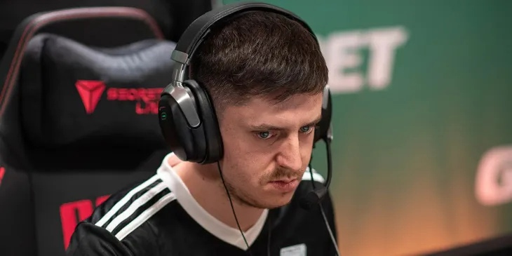

Team Vitality сыграет с Astralis в полуфинале BLAST Premier: Fall European Showdown 2022
Team Vitality обыграла TyLoo в четвертьфинале BLAST Premier: Fall European Showdown 2022 по CS:GO. Матч завершился со счетом 2:0 (16:12 на Inferno, 16:10 на Dust2). Следом Astralis победила Eternal Fire. В полуфинале команда Лукаса gla1ve Россандэра сразится с Vitality. Противостояние запланировано на 21 октября, 20:30 мск. BLAST Premier: Fall European Showdown 2022 проходит с 19 по 23 октября в онлайне. Коллективы разыгрывают призовой фонд в размере $67,5 тыс. и слот на BLAST Premier: Fall Finals 2022.